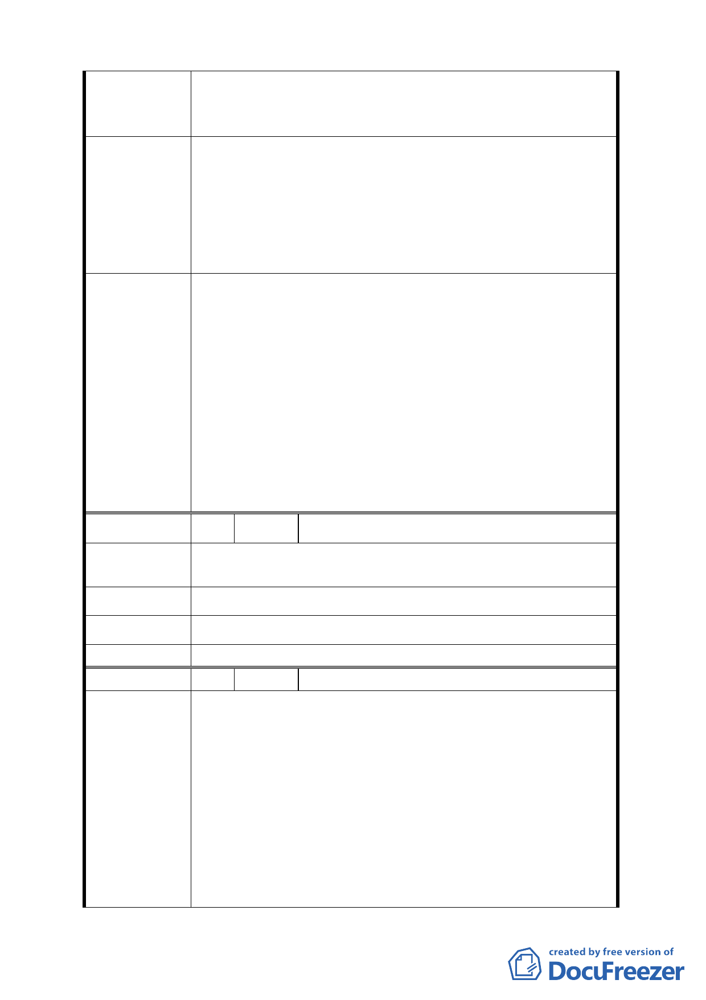

發展局回應
之二分之ㄧ以上』之限制。一者可避免開發業者變相使
用，再者更可鼓勵開發業者興建外觀型式較符合現代美學
之建築。
經查 G1～G10 街廓係屬科技工業區（供倉儲使用），其
位於交通樞紐位置並緊鄰內湖科技園區，規劃原意係為供
倉儲、運輸、轉運及配送等使用為主，且為因應未來科技
產業蓬勃發展可能衍生之物流、倉儲需求，以及松山機場
直航後本市產業走向之調整，故建議仍應維持倉儲業須達
二分之一以上樓地板面積之規定。
委員會決議
一、案內「基隆河（中山橋至成美橋段）計畫案（南段
地區）」街廓編號 G1-G10 之科技工業區（供倉儲使
用）第三十八組倉儲業使用之容積樓地板面積，調
整為應達申請基地總容積樓地板面積之「三分之ㄧ」
以上。
二、另為利計畫後續執行與辨識，併同修改前項使用分
區名稱為「科技工業區 D 區 」，並於其使用項目載
記面積規模規定，以玆完備。同時為考量市場機制
之彈性及對土地利用之完整性，於計畫書內加註該
分區內之各街廓得採合併開發集中留設方式予以規
劃設計。
編 號 6 陳情人 陳月玲、陳文志、陳文一
請求允許農產品批發業納入本區土地及建築物使用容許組
陳 情 理 由 別。
建 議 辦 法 --
發展局回應 同編號 4-發展局回應一之內容。
委員會決議 同編號 4 決議一。
編 號 7 陳情人 黃益聯等 4 人
一、 本地段土地（大彎南段）已開發 10 年，但根據計畫
書第 7 頁所載，倉儲業僅佔 3%，可見倉儲業進駐本
區的意願低落，而我們地主已苦等了 10 年無法開
發，難道要本區地主再等幾個 10 年嗎？
二、 目前內科及大彎段工業區進駐之廠商，絕大部分都是
陳情理由
以辦公研發為主，幾乎沒有真正的製造業進駐，所以
倉儲物流業需求有限。
三、 大彎南段倉儲用地 97 年公告現值 70,000 元/平方公
尺（231,405 元/坪），市價更達 40 萬元/坪，即使真
有需求者也不願進駐本區，而選擇設在低單價之工業
11